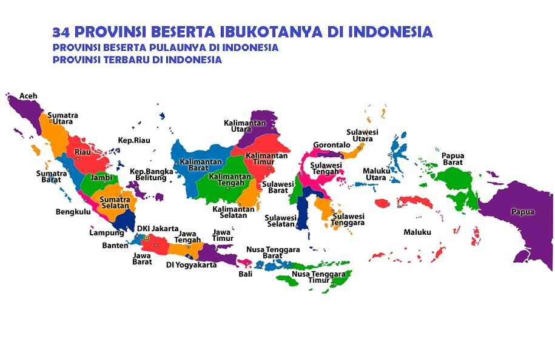

Keanekaragaman Dalam Masyarakat Indonesia
Menurut dataindonesia.id dan Badan Pusat Statistik, per 1 Juli 2024, populasi Indonesia telah mencapai sekitar 283.487.000 (283 juta) jiwa. Indonesia merupakan negara dengan populasi terbesar ke-4 di dunia, tepat di belakang Amerika Serikat dan di atas Pakistan. Indonesia sangat beragam dan memiliki wilayah yang relatif luas karena banyaknya pulau. Sebagian besar sejarah Indonesia diwarnai oleh perjuangan untuk mempersatukan bangsa karena banyak presiden dan penguasa menganggap stabilitas dan rasa kebersamaan masih ada di Indonesia. Artikel ini berusaha untuk membahas berbagai kompleksitas dalam budaya, agama, dalam masyarakat kita.
Indonesia adalah negara maritim yang memiliki 34 provinsi dan tanah luas (kebanyakan berupa kepulauan). Indonesia disebut sebagai negara agraris karena beberapa orang Indonesia bekerja dalam industri pertanian. Terdapat banyak keragaman di atas tanah besar Indonesia. Keanekaragaman semacam itu sebagai hadiah. Keragaman masyarakat ditunjukkan oleh banyak variasi yang ditampilkan di banyak bidang.
Tercatat , Indonesia setidaknya memiliki 17.000-18.000 pulau. Negara kepulauan membuat masing-masing pulau dan daerah memiliki kebiasaan dan kehidupan yang juga berbeda-beda. Namun, Indonesia memiliki lebih banyak faktor yang menyebabkan keberagamannya. Seperti perkembangan daerah, perkembangan daerah atau pulau yang satu mungkin lebih maju dari yang lain maupun lebih lambat dari yang lain menciptakan keberagaman.
Indonesia memiliki lebih dari 1.300 suku bangsa yang tersebar di seluruh wilayah negara ini. Suku yang memiliki populasi terbanyak adalah suku Jadengan 40,02% dari jumlah penduduk atau sekitar 95,2 juta jiwa. Suku di Indonesia bisa sangat berpengaruh, namun jumlah suku yang sangat besar di Indonesia dapat memecah belah negara kita dan menimbulkan lebih banyak masalah. Seperti perseteruan antara suku Dayak dan suku Madura yang pernah terjadi, terutama terkait dengan hak lahan dan sumber daya alam. Konflik ini sering melibatkan kekerasan dan pemusnahan aset.
Meskipun terkadang terdapat kesulitan dalam keberagaman Indonesia, keberagaman tersebut juga terkadang mengekspresikan kecerdikan dan budaya yang hidup yang dianugerahkan Indonesia. Indonesia kaya akan berbagai ekspresi budaya, masing-masing mewakili aspek unik identitas negara. Tarian daerah, alat musik tradisional, pakaian adat, upacara adat, rumah adat merupakan contoh yang signifikan.
Pemerintah menetapkan Katolik, Islam, Khonghucu, Kristen, Buddha, Hindu sebagai agama resmi di Indonesia. Mayoritas masyarakat Indonesia adalah Islam (87.2%), Kristen (6.9%), Katolik (2.9%), Buddha (0.7%) dan Konghucu (0.05%). Sejarah agama-agama besar di Indonesia sudah ada sejak lama, seperti islam yang bahkan sejak zaman kerajaan Majapahit.

Pancasila, seperti Konstitusi AS, merupakan inti dari visi dan misi bangsa kita. Pancasila mengajarkan kita untuk beriman, berlaku adil, bekerja sama, dan prinsip-prinsip inti lainnya yang harus diteladani oleh setiap warga negara Indonesia. Semua prinsip inti Pancasila juga sebagian besar berlaku untuk agama Kristen/Katolik dan beberapa untuk agama lain.
Kolonialisme juga berdampak besar di Indonesia, contoh paling terkenal adalah Belanda (VOC) yang secara paksa menduduki Indonesia selama lebih dari 3 abad. Bahkan memengaruhi bahasa yang kita gunakan saat ini, "handuk" dari "handdoek", "kulkas" dari "koelkast", dan "kantor" dari "kantoor". Pendidikan dan arsitektur serta aspek kehidupan lainnya juga dipengaruhi oleh pendudukan Belanda. Pendudukan lainnya termasuk Jepang pada Perang Dunia II, Prancis dan Inggris pada Perang Napoleon dan Portugis pada tahun 1512.
Keberagaman Indonesia tak tertandingi di negara-negara tetangga dengan lebih dari 700 bahasa lisan dan lebih dari 1.300 suku bangsa yang diakui. Keberagaman ini tercermin dalam setiap aspek kehidupan sehari-hari, mulai dari adat istiadat, makanan khas, pakaian adat dan dialek lokal. Identitas budaya Indonesia merupakan jalinan dinamis dari berbagai elemen ini, yang dibentuk oleh sejarah, perdagangan, agama, penjajahan, dan modernisasi.